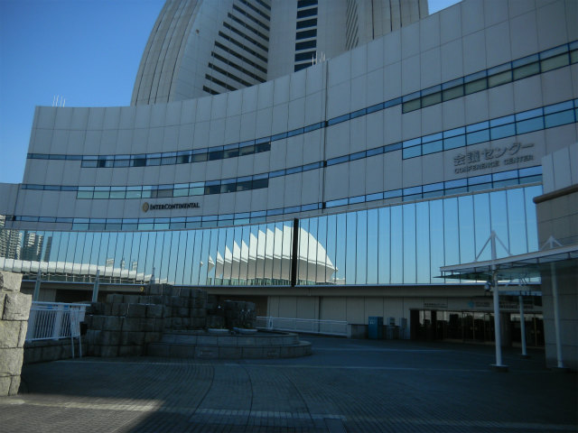

| ・ ディジタルホログラフィ装置の作り方・使い方＠パシフィコ横浜 (H25.12.05) | |||
昨年度はM2K城くんとM1I上くんが講習会に行きました。今回はディジタルホログラフィ装置の作り方・使い方にホログラフィの研究をしているB4A井くんとE田くんが受講しました。日帰りで中華街で晩ご飯を食べる時間もありませんでしたが、ホログラフィの理解は深まったとのことです。 |
|||
|
富士山！ |
ここから | ||
|
菊名で |
地下鉄にのってみなとみらいへ | ||
|
そこを上がれば |
Friedrich Schillerで | ||
|
ながーいエスカレータを登って |
耶蘇のお祭りの月 | ||
|

うーん |
そこじゃない | ||
|
左に進んで |
広さに居心地悪そうです | ||
|
講習が終わりA井くんと |
うろうろ | ||
|
軽く迷子 |
新幹線の時間が | ||
|
ぶれぶれ |
勉強になりました | ||